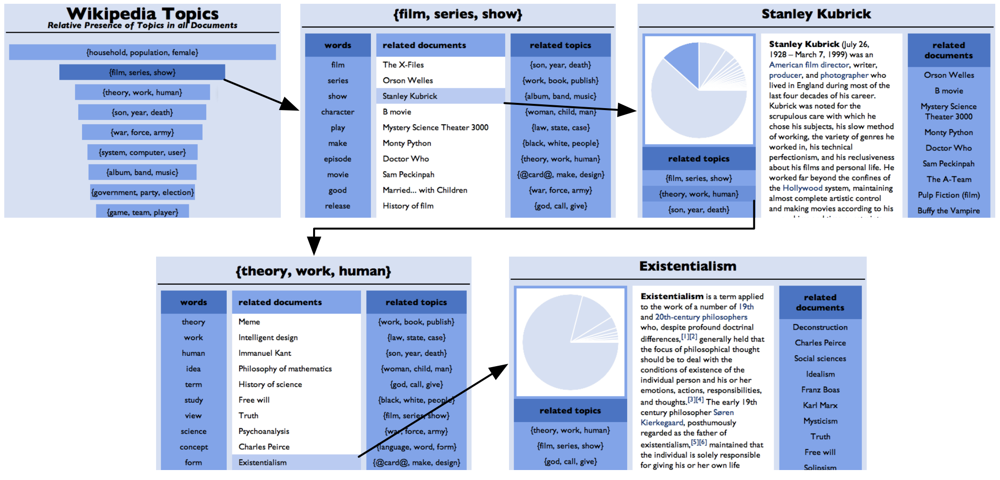
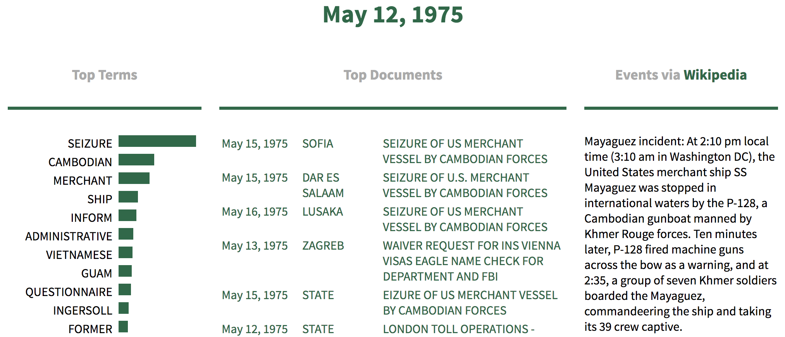

exploring text data
Written text is a rich and abundant source of data that tells us about human behavior, relationships, and influences. Probabilistic topic models discover the underlying themes in collection of documents; these themes can be used to summarize, organize, explore, and analyze a given corpus. Topic models, however, are high-level statistical tools—a user must scrutinize numerical distributions to understand their results. I have worked to make topic modeling results accessible, as well as to build custom topic models.
Visualizing Topic Models
We have created a method for visualizing topic models, allowing users to explore a corpus by navigating between high level topic descriptions and individual documents, hopefully deepening their understanding of the corpus.
citation
@inproceedings{Chaney:2012,
author = {Chaney, Allison J.B. and Blei, David M.},
title = {Visualizing Topic Models},
booktitle = {Proceedings of the Sixth International AAAI Conference on Weblogs and Social Media},
series = {ICWSM '12},
year = {2012}
}resources
- Visualizing Topic Models [PDF]
- Source code [Original code via GitHub] [Online (Django) variant via GitHub]
- Wikipedia Demo
Historical Event Detection
Historians and political scientists commonly read large quantities of text to construct an accurate picture of significant events. Our methods help historians identify possible events from the texts of historical communication.
citation
@inproceedings{Chaney:2016,
title={Detecting and Characterizing Events},
author={Chaney, Allison J.B. and Wallach, Hanna and Connelly, Matthew and Blei, David M.},
booktitle={Proceedings of the 2016 Conference on Empirical Methods in Natural Language Processing},
series = {EMNLP '16},
pages={1142--1152},
year={2016}
}resources
- Detecting and Characterizing Events [PDF]
- Talk slides (generalized from multiple talks) [PDF]
- Source code [via GitHub]
- Visualization Demo
- Working paper at Text as Data 2015 Conference [paper PDF] [slides PDF]